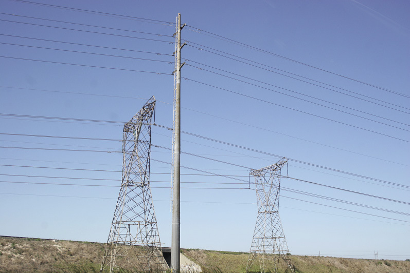
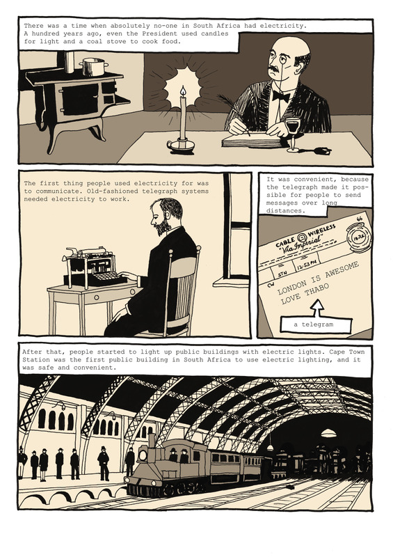
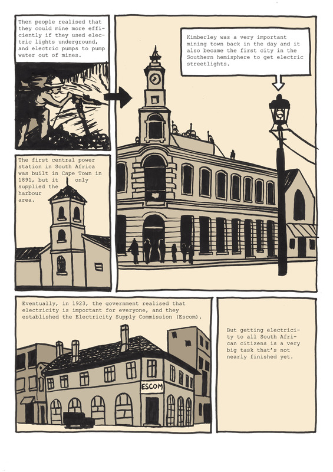
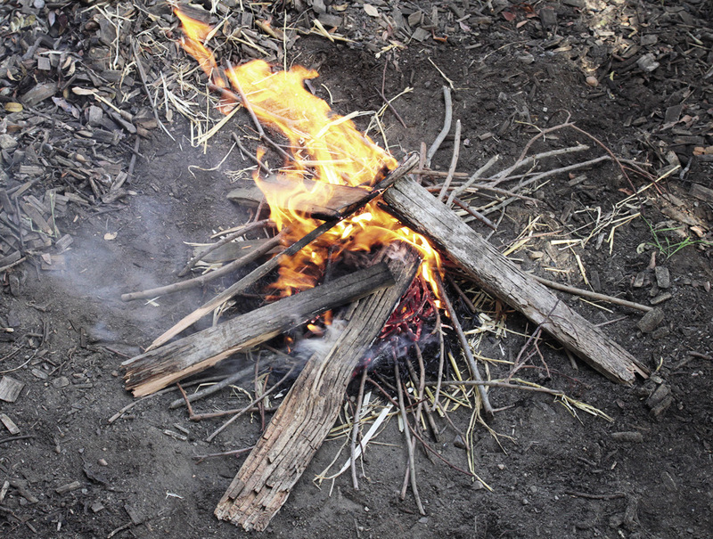
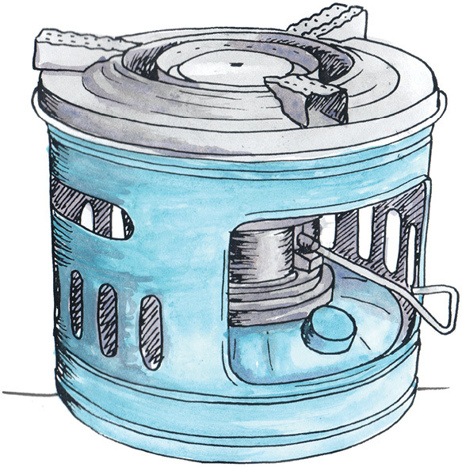
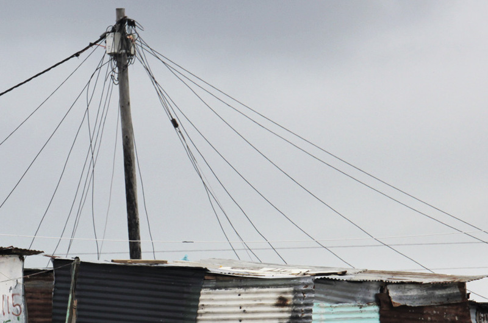
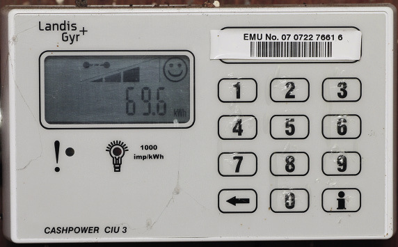
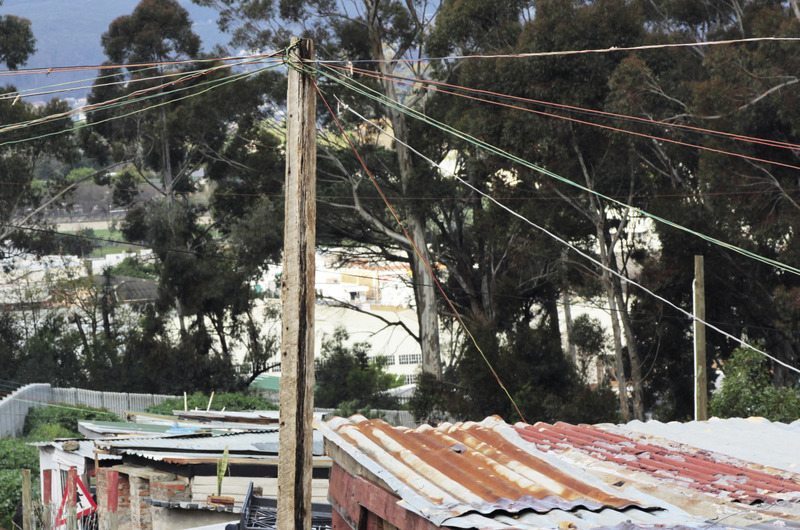
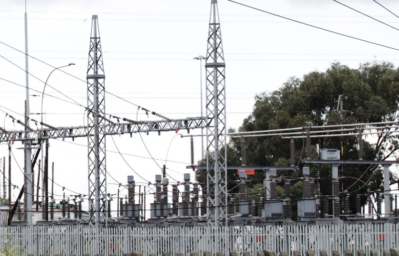

<div class="container">
  <div id="contents" class="col-md-12 main-content"><h1 xmlns="http://www.w3.org/1999/xhtml" id="toc-id-5">Energy supply for the people</h1>

    <p xmlns="http://www.w3.org/1999/xhtml" class="x--Body-opener">In Chapter 7, you learnt about
    electrical circuits and electrical components. You also learnt
    about the international signs that are used to draw diagrams
    for these circuits.</p>

    <p xmlns="http://www.w3.org/1999/xhtml" class="x--Body-opener">In this chapter, you will learn more
    about the practical aspects of electricity and how it affects
    people, particularly in informal settlements and rural areas.
    You will learn what different sources of energy are used for
    heating, lighting and cooking, and how illegal electricity
    connections cause problems for the country.</p>

    <p xmlns="http://www.w3.org/1999/xhtml" class="x--Body-opener">Lastly you will discuss how our
    country needs to provide access to electricity for households,
    industries and buildings such as schools and hospitals. You
    will write a report on this topic.</p>


   <figure xmlns="http://www.w3.org/1999/xhtml"> 

    <figcaption>Figure 1: Pylons that carry the country's
    main electricity supply</figcaption></figure><figure xmlns="http://www.w3.org/1999/xhtml"> 

    <figcaption>Figure 2</figcaption></figure><figure xmlns="http://www.w3.org/1999/xhtml"> 
</figure><h2 xmlns="http://www.w3.org/1999/xhtml" id="toc-id-6">Energy usage in rural and informal settlements</h2>

    <h4 xmlns="http://www.w3.org/1999/xhtml">Before electricity: Clever ways of finding and using energy</h4>

    <p xmlns="http://www.w3.org/1999/xhtml" class="x--Body-Text">In earlier times, before the
    introduction of electricity, communities made clever plans to
    get light and heat − aspects of life that
    modern humans, entirely dependent on various forms of
    electricity, simply take for granted. Let's see what
    communities in our country used for fuel and lighting before
    the advent of electricity.</p>

    <p xmlns="http://www.w3.org/1999/xhtml" class="x--Body-indent">African smiths discovered how to
    produce high temperatures in their village furnaces by burning
    wood. In these furnaces, they manufactured steel for weapons
    and implements. The furnaces date back over 2 000 years. Wood
    from the indigenous <span class="char-style-override-5">acacia
    robusta</span> tree, which is particularly hard and therefore
    smoulders when it is lit, was used in these Iron-age furnaces.
    The same wood was also used for cooking fires and for lighting
    purposes.</p>

    <p xmlns="http://www.w3.org/1999/xhtml" class="x--Body-indent">Early "ovens" that were created by
    digging large holes and lining them with dung and other
    heat-retaining substances, were also used thousands of years
    ago.</p>

    <figure xmlns="http://www.w3.org/1999/xhtml"> 

    <figcaption>Figure 3: A pit fire</figcaption></figure><h4 xmlns="http://www.w3.org/1999/xhtml">Energy for heating, lighting and cooking in rural and informal settlements in the late twentieth century</h4>

    <p xmlns="http://www.w3.org/1999/xhtml" class="x--Body-Text">Electricity was introduced in the
    country early in the twentieth century, but was mainly
    allocated to cities and industrial areas. As the century
    progressed, electricity reached more populated areas, but rural
    and informal settlements were still mostly not connected. As
    late as 1994, only 1% of rural households had access to
    electricity! Other methods had to be used.</p>

    <p xmlns="http://www.w3.org/1999/xhtml" class="x--Body--above"><b>Heating</b></p>

    <p xmlns="http://www.w3.org/1999/xhtml" class="x--Body-indent">Coal and charcoal were the fuels
    mainly used for heating in the absence of firewood. Wood was
    cheaper than coal, but it was harder to obtain because the
    areas around the settlements had been stripped by earlier
    inhabitants.</p>

    <p xmlns="http://www.w3.org/1999/xhtml" class="x--Body-indent-1-3">Another source of energy was gas,
    but this was also expensive, and needed special equipment such
    as gas bottles and factory-made <b>elements</b> to heat the houses and
    shacks.</p>

    <p xmlns="http://www.w3.org/1999/xhtml" class="x--Body-indent-1-3">Paraffin was another popular
    source of energy because it was easy to obtain and the heaters
    that burnt paraffin could be bought quite cheaply. But paraffin
    has safety concerns, which you will look at later in this
    chapter.</p>

    <div xmlns="http://www.w3.org/1999/xhtml" class="aside">
      <p class="x--Body-box-no-indent">A heating <b>element</b> converts electricity
      to heat through resistance encountered in the material the
      element is made of. When gas is used, the burning gas heats
      the element, which retains and radiates heat.</p>
    </div>

    <p xmlns="http://www.w3.org/1999/xhtml" class="x--Body--above"><b>Lighting</b></p>

    <p xmlns="http://www.w3.org/1999/xhtml" class="x--Body-indent">Lighting is a necessity in daily
    life. Imagine trying to do your homework in the dark! By 1994,
    candles were still the main source of lighting in rural areas.
    Eighty-two per cent of households relied on candles to provide
    lighting after dark.</p>

    <p xmlns="http://www.w3.org/1999/xhtml" class="x--Body-indent">Lights using paraffin as a fuel
    source made up most of the balance − nearly
    17% of the households. People who used gas for cooking could
    also use the gas for lighting, and a few households relied on
    their wood and coal fires to provide light. Gas, wood and coal
    were not very efficient.</p>

    <p xmlns="http://www.w3.org/1999/xhtml" class="x--Body-indent">A very small number of people could
    use electricity: almost less than 1% of the population of
    informal settlements.</p>

    <p xmlns="http://www.w3.org/1999/xhtml" class="x--Body--above"><b>Cooking</b></p>

    <p xmlns="http://www.w3.org/1999/xhtml" class="x--Body-indent">Paraffin was the fuel mostly used for
    cooking in informal settlements: over 90% of the people used
    paraffin cookers. Wood-burning and coal-burning stoves were
    used by almost all of the other households, with gas only
    occasionally being used for cooking.</p>

    <p xmlns="http://www.w3.org/1999/xhtml" class="x--Body-indent">Even though some areas were supplied
    with electricity, less than half of these people used it to
    cook. Stoves and electrical appliances were too expensive for
    most people living in informal settlements.</p>
<figure xmlns="http://www.w3.org/1999/xhtml"> 

    <figcaption>Figure 4: A paraffin
    stove</figcaption></figure><p xmlns="http://www.w3.org/1999/xhtml" class="x--Body--above"><b>Fire risks due to open fires as a source of energy</b></p>

    <p xmlns="http://www.w3.org/1999/xhtml" class="x--Body-indent">Open flames are always dangerous.
    Informal settlement housing is normally built from materials
    that burn easily, and the shacks and houses are often built
    very close together. People without electricity who are forced
    to use fire for heating, lighting and cooking have to be
    extremely careful. Carelessness can cause major fires. When a
    major fire occurs, emergency services have difficulty putting
    it out since there are no access roads for their fire engines
    or water points for their hoses. But due to the lack of basic
    services, such as electricity, people opt for the use of
    alternative, often dangerous, energy sources out of
    necessity.</p>

    <div xmlns="http://www.w3.org/1999/xhtml" class="note">
      <p>A rural settlement is far away from any towns,
cities or big industries, such as mines. An informal
settlement consists of temporary houses for people
who moved closer to a town, city or industry,
usually to find work.
Rural settlements are often far away from power
stations, as well as from towns and cities where
there are already electricity transmission lines. It
is expensive to build electricity transmission lines
to far-away places. It also takes times to plan and
build them.
Some people in rural settlements cannot afford to
pay for electricity.
Informal settlements are usually built very quickly
and without planning, so there is no time to plan
or build electricity transmission lines before the
people move there.
Some people in informal settlements cannot afford
to pay for electricity either.
</p></div>

    <p xmlns="http://www.w3.org/1999/xhtml" class="x--Body-investigation-hanging">1. Imagine you were
    put in charge of changing the way electricity is supplied to
    benefit the population of the country.</p>

    <p xmlns="http://www.w3.org/1999/xhtml" class="x--Body-investigation-hanging-a-">(a) Looking at the
    percentages of the population that had an electricity supply,
    what would your main goal be?</p><hr xmlns="http://www.w3.org/1999/xhtml"/><p xmlns="http://www.w3.org/1999/xhtml" class="x--Body-investigation-hanging-a-">(b) Which section
    of the population do you think needs the most attention?</p><hr xmlns="http://www.w3.org/1999/xhtml"/><p xmlns="http://www.w3.org/1999/xhtml" class="x--Body-investigation-hanging-a-">(c) Write four or
    five things that you will investigate before you decide to
    supply a rural or informal settlement with electricity for the
    first time.</p>

    <p xmlns="http://www.w3.org/1999/xhtml" class="x--Body-story para-style-override-19"><i>For example: I
    would investigate the safety aspects of allocating electricity
    to informal settlements.</i></p>
    <hr xmlns="http://www.w3.org/1999/xhtml"/><h4 xmlns="http://www.w3.org/1999/xhtml">The present: Energy
    for all South Africans</h4>

    <p xmlns="http://www.w3.org/1999/xhtml" class="x--Body-Text">The South African government announced
    its policy to provide free basic services to the poor in 2000,
    the main areas of focus being free basic water, sanitation and
    power supply.</p>

    <p xmlns="http://www.w3.org/1999/xhtml" class="x--Body-indent">Electricity is generally cheaper than
    traditional forms of energy such as coal, paraffin, candles and
    wood. Even if the direct cost of electricity is not cheaper
    than the direct cost of wood, the indirect savings or
    advantages need to be taken into account. For example, members
    of a rural family could spend hours gathering and chopping
    firewood, hours that could be spent doing something else if
    they had electricity.</p>

    <p xmlns="http://www.w3.org/1999/xhtml" class="x--Body-indent-1-3 para-style-override-20">For the
    government to achieve their aim, about 210 000 households a
    year are being connected to the <b>national grid</b> and another 10 000
    a year are supplied with <b>renewable energy.</b></p>

    <div xmlns="http://www.w3.org/1999/xhtml" class="aside">
      <p class="x--Body-box-no-indent">The electricity network
      across South Africa is called the <b>national grid</b>. It includes
      power stations, power lines and substations.</p>

      <p class="x--Body-box-no-indent"><b>Renewable energy</b> is energy
      that comes from resources that will not run out. The sun and
      wind are the most common sources of renewable energy.</p>
    </div>

    <div xmlns="http://www.w3.org/1999/xhtml" class="note">
      <p>Of the 12,8 million households that are electrified in
South Africa, about 52 000, mostly in rural areas, are
being supplied by basic solar power. This is when
the sun’s energy is gathered to charge batteries that
are then used to power appliances.
</p></div>

    <p xmlns="http://www.w3.org/1999/xhtml" class="x--Body-indent">By 2013, 85% of the country had been
    given access to electricity. In 1994, only 37% of the country
    had electrical power, so it can be said that the government's
    policy is effective.</p>

    <p xmlns="http://www.w3.org/1999/xhtml" class="x--Body-indent">The government is also encouraging
    poorer people to get connected to the electricity system by
    offering an amount of free electricity. This is currently 50
    kWh per household, per month.</p>

    <h3 xmlns="http://www.w3.org/1999/xhtml">Investigate:energy resources</h3>
<figure xmlns="http://www.w3.org/1999/xhtml"> 

    <figcaption>Figure 5: An informal community with an
    electrical supply. Notice the control boxes at the top of the
    poles. They control how much electricity each household uses
    and have a built-in safety mechanism for when there is a short
    circuit.</figcaption></figure><p xmlns="http://www.w3.org/1999/xhtml" class="x--Body--above">Andile lives here. He plans to be an
    engineer and wants to find out what the people in his community
    need. He already knows the following:</p>

    <ul xmlns="http://www.w3.org/1999/xhtml"><li class="x--Body-text-bullet">The people in this community
      pay for energy when they use vehicles such as cars, buses and
      taxis. The petrol is the energy resource these vehicles
      need.</li>

      <li class="x--Body-text-bullet">The people also pay for
      energy when they buy food to eat. Food is the energy resource
      they need to function.</li>
    </ul><p xmlns="http://www.w3.org/1999/xhtml" class="x--Body-indent">Now he wants to ask them about the
    energy they use for heating their homes in winter, for cooking
    food and boiling water, and for light at night.</p>

    <p xmlns="http://www.w3.org/1999/xhtml" class="x--Body-indent">He separates the <i>energy resources</i> from the
    <i>systems</i> they use.
    For example, paraffin is an energy resource that people pay
    for. But they use paraffin in different systems: paraffin
    stoves, paraffin heaters, paraffin lamps, and even fridges that
    work with paraffin.</p>

    <p xmlns="http://www.w3.org/1999/xhtml" class="x--Body--above"><span class="Body-bold"><b>Help Andile
    get his questionnaire ready: Individual work</b></span></p>

    <p xmlns="http://www.w3.org/1999/xhtml" class="x--Body-indent">Complete the table below and on the
    next page by writing what you expect people living in different
    households will tell you about the different energy resources
    they use and the different systems they use them in. The first
    table is for households that do not have electricity, and the
    second table is for households that do have electricity.</p>

    <p xmlns="http://www.w3.org/1999/xhtml" class="x--Body-indent">You will find pictures of systems
    that use the energy resources in Chapter 5, Chapter 7 and in
    this chapter.</p>

    <table xmlns="http://www.w3.org/1999/xhtml" id="table-13" class="No-Table-Style table-style-override-1"><tbody><tr class="Row-Column-36"><td class="cell-style-override-4" colspan="3">
            <p class="x--Body-Text para-style-override-15">
            <b>Households without electricity</b></p>
          </td>
        </tr><tr class="Row-Column-93"><td class="cell-style-override-4">
            <p class="x--Body-Text para-style-override-3"><b>I think
            that people will tell us about these ENERGY
            RESOURCES:</b></p>
          </td>

          <td class="cell-style-override-4">
            <p class="x--Body-Text para-style-override-3"><b>I think
            we will hear about these SYSTEMS and USES of the energy
            resources:</b></p>
          </td>

          <td class="cell-style-override-4">
            <p class="x--Body-Text para-style-override-3"><b>
            DISADVANTAGES or RISKS of using these energy
            resources:</b></p>
          </td>
        </tr><tr class="Row-Column-64"><td class="cell-style-override-4">
            <p class="x--Body-Text">paraffin</p>
          </td>

          <td class="cell-style-override-4">
            <p class="x--Answer-text" xml:lang="en-GB"/>
          </td>

          <td class="cell-style-override-4">
            <p class="x--Answer-text" xml:lang="en-GB"/>
          </td>
        </tr><tr class="Row-Column-94"><td class="cell-style-override-4">
            <p class="x--Body-Text">coal</p>
          </td>

          <td class="cell-style-override-4">
            <p class="x--Answer-text" xml:lang="en-GB"/>
          </td>

          <td class="cell-style-override-4">
            <p class="x--Answer-text" xml:lang="en-GB"/>
          </td>
        </tr><tr class="Row-Column-95"><td class="cell-style-override-4">
            <p class="x--Body-Text">wood</p>
          </td>

          <td class="cell-style-override-4">
            <p class="x--Answer-text" xml:lang="en-GB"/>
          </td>

          <td class="cell-style-override-4">
            <p class="x--Answer-text" xml:lang="en-GB"/>
          </td>
        </tr><tr class="Row-Column-95"><td class="cell-style-override-4">
            <p class="x--Body-Text">candles</p>
          </td>

          <td class="cell-style-override-4">
            <p class="x--Answer-text" xml:lang="en-GB"/>
          </td>

          <td class="cell-style-override-4">
            <p class="x--Answer-text" xml:lang="en-GB"/>
          </td>
        </tr><tr class="Row-Column-95"><td class="cell-style-override-4">
            <p class="x--Body-Text">batteries</p>
          </td>

          <td class="cell-style-override-4">
            <p class="x--Answer-text" xml:lang="en-GB"/>
          </td>

          <td class="cell-style-override-4">
            <p class="x--Answer-text" xml:lang="en-GB"/>
          </td>
        </tr><tr class="Row-Column-96"><td class="cell-style-override-4">
            <p class="x--Body-Text">gas</p>
          </td>

          <td class="cell-style-override-4">
            <p class="x--Answer-text" xml:lang="en-GB"/>
          </td>

          <td class="cell-style-override-4">
            <p class="x--Answer-text" xml:lang="en-GB"/>
          </td>
        </tr><tr class="Row-Column-93"><td class="cell-style-override-4">
            <p class="x--Body-Text">sunlight</p>
          </td>

          <td class="cell-style-override-4">
            <p class="x--Answer-text" xml:lang="en-GB"/>
          </td>

          <td class="cell-style-override-4">
            <p class="x--Answer-text" xml:lang="en-GB"/>
          </td>
        </tr></tbody></table><table xmlns="http://www.w3.org/1999/xhtml" id="table-14" class="No-Table-Style table-style-override-1"><tbody><tr class="Row-Column-36"><td class="cell-style-override-4" colspan="3">
            <p class="x--Body-Text para-style-override-15"><b>
            Households with electricity</b></p>
          </td>
        </tr><tr class="Row-Column-93"><td class="cell-style-override-4">
            <p class="x--Body-Text para-style-override-3"><b>I think
            that people will tell us about these ENERGY
            RESOURCES:</b></p>
          </td>

          <td class="cell-style-override-4">
            <p class="x--Body-Text para-style-override-3"><b>I think
            we will hear about these SYSTEMS and USES of the energy
            resources:</b></p>
          </td>

          <td class="cell-style-override-4">
            <p class="x--Body-Text para-style-override-3"><b>
            DISADVANTAGES or RISKS of using these energy
            resources:</b></p>
          </td>
        </tr><tr class="Row-Column-99"><td class="cell-style-override-4">
            <p class="x--Body-Text">paraffin</p>
          </td>

          <td class="cell-style-override-4">
            <p class="x--Answertext" xml:lang="en-GB"/>
          </td>

          <td class="cell-style-override-4"/>
        </tr><tr class="Row-Column-94"><td class="cell-style-override-4">
            <p class="x--Body-Text">coal</p>
          </td>

          <td class="cell-style-override-4">
            <p class="x--Answertext" xml:lang="en-GB"/>
          </td>

          <td class="cell-style-override-4"/>
        </tr><tr class="Row-Column-95"><td class="cell-style-override-4">
            <p class="x--Body-Text">wood</p>
          </td>

          <td class="cell-style-override-4">
            <p class="x--Answertext" xml:lang="en-GB"/>
          </td>

          <td class="cell-style-override-4">
            <p class="x--Answertext" xml:lang="en-GB"/>
          </td>
        </tr><tr class="Row-Column-64"><td class="cell-style-override-4">
            <p class="x--Body-Text">candles</p>
          </td>

          <td class="cell-style-override-4">
            <p class="x--Answertext" xml:lang="en-GB"/>
          </td>

          <td class="cell-style-override-4">
            <p class="x--Answertext" xml:lang="en-GB"/>
          </td>
        </tr><tr class="Row-Column-64"><td class="cell-style-override-4">
            <p class="x--Body-Text">electricity that is not
            supplied by batteries</p>
          </td>

          <td class="cell-style-override-4">
            <p class="x--Answertext" xml:lang="en-GB"/>
          </td>

          <td class="cell-style-override-4">
            <p class="x--Answertext" xml:lang="en-GB"/>
          </td>
        </tr><tr class="Row-Column-96"><td class="cell-style-override-4">
            <p class="x--Body-Text">batteries</p>
          </td>

          <td class="cell-style-override-4">
            <p class="x--Answertext" xml:lang="en-GB"/>
          </td>

          <td class="cell-style-override-4">
            <p class="x--Answertext" xml:lang="en-GB"/>
          </td>
        </tr><tr class="Row-Column-96"><td class="cell-style-override-4">
            <p class="x--Body-Text">gas</p>
          </td>

          <td class="cell-style-override-4">
            <p class="x--Answertext" xml:lang="en-GB"/>
          </td>

          <td class="cell-style-override-4">
            <p class="x--Answertext" xml:lang="en-GB"/>
          </td>
        </tr><tr class="Row-Column-64"><td class="cell-style-override-4">
            <p class="x--Body-Text">sunlight</p>
          </td>

          <td class="cell-style-override-4">
            <p class="x--Answertext" xml:lang="en-GB"/>
          </td>

          <td class="cell-style-override-4">
            <p class="x--Answertext" xml:lang="en-GB"/>
          </td>
        </tr></tbody></table><h2 xmlns="http://www.w3.org/1999/xhtml" id="toc-id-7">Unsafe and illegal electricity connections</h2>

    <p xmlns="http://www.w3.org/1999/xhtml" class="x--Body-Text">ESKOM and other companies generate
    (make) electricity and supply it to users through long wires
    called power lines. The users include shops, factories, mines
    or people who live in flats, shacks or houses. The users
    connect to the big power lines through thinner cables that go
    through metering boxes. The metering boxes measure the amount
    of energy used.</p>

    <figure xmlns="http://www.w3.org/1999/xhtml"> 

    <figcaption>Figure 6: A meter that measures legal
    electricity usage</figcaption></figure><figure xmlns="http://www.w3.org/1999/xhtml"> 

    <figcaption>Figure 7: Illegal electricity connections
    in an informal settlement. Notice that there is no control box
    at the top of the pole for measuring electricity usage or for
    cutting off the electricity in case of a short circuit.</figcaption></figure><p xmlns="http://www.w3.org/1999/xhtml" class="x--Body-indent">The electricity company needs money
    to buy coal, new generators, and to pay the people that
    maintain the generators. This is why we have to pay for
    electricity.</p>

    <p xmlns="http://www.w3.org/1999/xhtml" class="x--Body-indent">Electricity is not a cheap energy
    resource, which is why some people make illegal connections.
    Look at Figure 7. You can see the wires people have connected
    to an electricity pylon. These are illegal connections; the
    word "illegal" means "against the law".</p>

    <p xmlns="http://www.w3.org/1999/xhtml" class="x--Body-indent">The law says that only a qualified
    electrician can connect a building to the main electricity
    supply from the municipality, which is called "the mains". The
    mains supply electricity with an energy level of about 220
    volts. This much energy is enough to kill you. This means
    poorly connected wires can really hurt someone and cause a
    short circuit that could start a fire. You learnt about short
    circuits in Chapter 5.</p>

    <p xmlns="http://www.w3.org/1999/xhtml" class="x--Body-indent">Electricians have been trained to
    make proper and safe connections, and know how to connect the
    mains to the metering box. However, there are people who think
    they know how to work with electricity, and they connect wires
    to the mains on their own. Since this is illegal they don't
    connect a metering box. They will often use bare wire, without
    any insulation, that hangs in trees or lies on the ground. They
    leave wires where they can easily come into contact with
    corrugated zinc-iron walls and roofs, or gates and fences, or
    be cut by metal window-frames. They forget or don't know that
    all these metal objects can become conductors that will carry
    220 volts of electricity if they come into contact with the
    illegal live wires from the mains. These connections can easily
    cause short circuits that often cause fires in shacks and
    houses.</p>

    <h3 xmlns="http://www.w3.org/1999/xhtml">The price of stolen electricity</h3>
<figure xmlns="http://www.w3.org/1999/xhtml"> 

    <figcaption>Figure 8: An electrical substation. These
    are often targeted by electricity thieves.</figcaption></figure><p xmlns="http://www.w3.org/1999/xhtml" class="x--Body-indent">Illegal connections are dangerous,
    and cost the whole country money! How does electricity theft
    affect the following groups of people, and what actions can
    they take to help stop this crime?</p>

    <p xmlns="http://www.w3.org/1999/xhtml" class="x--Body--above">This is a discussion task. Work in
    groups of three or four.</p>

    <p xmlns="http://www.w3.org/1999/xhtml" class="x--Body-investigation-hanging">1. The community:</p>

    <p xmlns="http://www.w3.org/1999/xhtml" class="x--Body-investigation-hanging-a-">(a) How are they
    affected by electricity theft?</p>
    <hr xmlns="http://www.w3.org/1999/xhtml"/><p xmlns="http://www.w3.org/1999/xhtml" class="x--Body-investigation-hanging-a-">(b) What actions
    can they take to help prevent electricity theft?</p>
    <hr xmlns="http://www.w3.org/1999/xhtml"/><p xmlns="http://www.w3.org/1999/xhtml" class="x--Body-investigation-hanging">2. Schools:</p>

    <p xmlns="http://www.w3.org/1999/xhtml" class="x--Body-investigation-hanging-a-">(a) How are they
    affected by electricity theft?</p>
    <hr xmlns="http://www.w3.org/1999/xhtml"/><p xmlns="http://www.w3.org/1999/xhtml" class="x--Body-investigation-hanging-a-">(b) What actions
    can they take to help prevent electricity theft?</p>
    <hr xmlns="http://www.w3.org/1999/xhtml"/><p xmlns="http://www.w3.org/1999/xhtml" class="x--Body-investigation-hanging">3. The government.</p>

    <p xmlns="http://www.w3.org/1999/xhtml" class="x--Body-investigation-hanging-a-">(a) How are they
    affected by electricity theft?</p>
    <hr xmlns="http://www.w3.org/1999/xhtml"/><p xmlns="http://www.w3.org/1999/xhtml" class="x--Body-investigation-hanging-a-">(b) What actions
    can they take to help prevent electricity theft?</p>
    <hr xmlns="http://www.w3.org/1999/xhtml"/><h2 xmlns="http://www.w3.org/1999/xhtml" id="toc-id-8">Sharing electricity fairly</h2>

    <p xmlns="http://www.w3.org/1999/xhtml" class="x--Body-Text">In section 8.1, you learnt how South
    Africa's government is improving the electricity supply so that
    more people can have access to electricity in their homes.</p>

    <p xmlns="http://www.w3.org/1999/xhtml" class="x--Body-indent">Electricity has to be generated by
    ESKOM, and they not only have to supply individual households,
    but also tend to the whole country's electricity needs. As you
    know, some systems are targeted by thieves, such as street
    lights and traffic lights. These are municipal systems. Who
    else requires electricity?</p>

    <h3 xmlns="http://www.w3.org/1999/xhtml">Consumers of electricity</h3>

    <p xmlns="http://www.w3.org/1999/xhtml" class="x--Body-Text">Work with a classmate on this
    exercise.</p>

    <ul xmlns="http://www.w3.org/1999/xhtml"><li class="x--Body-text-bullet">Try to think of every
      situation where electricity is required by users in South
      Africa.</li>

      <li class="x--Body-text-bullet">Think about transport,
      manufacturing and private users.</li>

      <li class="x--Body-text-bullet">Think about "hidden
      situations" where electricity is used, such as pumping water
      to households.</li>

      <li class="x--Body-text-bullet">Does your school use
      electricity?</li>
    </ul><p xmlns="http://www.w3.org/1999/xhtml" class="x--Body-indent">Examples are given below to guide
    you.</p>

    <table xmlns="http://www.w3.org/1999/xhtml" id="table-15" class="No-Table-Style"><tbody><tr class="Row-Column-36"><td class="cell-style-override-5">
            <p class="x--Body-Text para-style-override-3"><b>User</b></p>
          </td>

          <td class="cell-style-override-5">
            <p class="x--Body-Text para-style-override-3"><b>Item</b></p>
          </td>
        </tr><tr class="Row-Column-36"><td class="cell-style-override-5">
            <p class="x--Body-Text">Railways</p>
          </td>

          <td class="cell-style-override-5">
            <p class="x--Body-Text">Electrical trains</p>
          </td>
        </tr><tr class="Row-Column-36"><td class="cell-style-override-5"/>

          <td class="cell-style-override-5">
            <p class="x--Body-Text">Stations</p>
          </td>
        </tr><tr class="Row-Column-36"><td class="cell-style-override-5">
            <p class="x--Body-Text">Hospitals</p>
          </td>

          <td class="cell-style-override-5">
            <p class="x--Body-Text">Lighting</p>
          </td>
        </tr><tr class="Row-Column-36"><td class="cell-style-override-5"/>

          <td class="cell-style-override-5">
            <p class="x--Body-Text">Machines</p>
          </td>
        </tr><tr class="Row-Column-36"><td class="cell-style-override-5">
            <p class="x--Body-Text">Factories</p>
          </td>

          <td class="cell-style-override-5"/>
        </tr><tr class="Row-Column-36"><td class="cell-style-override-5"/>

          <td class="cell-style-override-5"/>
        </tr><tr class="Row-Column-36"><td class="cell-style-override-5">
            <p class="x--Body-Text">Mines</p>
          </td>

          <td class="cell-style-override-5"/>
        </tr><tr class="Row-Column-36"><td class="cell-style-override-5"/>

          <td class="cell-style-override-5"/>
        </tr><tr class="Row-Column-36"><td class="cell-style-override-5">
            <p class="x--Body-Text">Shops</p>
          </td>

          <td class="cell-style-override-5"/>
        </tr><tr class="Row-Column-36"><td class="cell-style-override-5"/>

          <td class="cell-style-override-5"/>
        </tr><tr class="Row-Column-36"><td class="cell-style-override-5"/>

          <td class="cell-style-override-5"/>
        </tr><tr class="Row-Column-36"><td class="cell-style-override-5"/>

          <td class="cell-style-override-5"/>
        </tr></tbody></table><p xmlns="http://www.w3.org/1999/xhtml" class="x--Body-indent">As a class, discuss the sharing of
    resources in the country. Use your lists to discuss the
    following points. Appoint someone to make notes on the
    blackboard. These are some of the topics you need to cover, but
    you must discuss the use of electricity in depth, so add other
    discussion points as they arise:</p>

    <ul xmlns="http://www.w3.org/1999/xhtml"><li class="x--Body-text-bullet">Who do you think is the
      greatest user of electricity in the country?</li>

      <li class="x--Body-text-bullet">Which group of people need
      electricity the most? (For example, do you think factories
      are more important than households?)</li>

      <li class="x--Body-text-bullet">Do you think that the supply
      of electricity affects job creation in South Africa?</li>

      <li class="x--Body-text-bullet">Who would suffer the most if
      there was a power failure for a long period of time?</li>

      <li class="x--Body-text-bullet">Are informal settlements
      ready for electricity supply?</li>

      <li class="x--Body-text-bullet">What steps should be taken
      against people who steal electricity by using illegal
      connections?</li>

      <li class="x--Body-text-bullet">What safe alternative energy
      sources do you think can be used where national grid
      electricity is not available?</li>
    </ul><p xmlns="http://www.w3.org/1999/xhtml" class="x--Body-indent">During and at the end of the
    discussion, make notes based on the points the class has
    raised. You can use these notes as references to help you in
    the next section.</p>

    <p xmlns="http://www.w3.org/1999/xhtml" class="x--Body-Text">Your notes:</p>
    <hr xmlns="http://www.w3.org/1999/xhtml"/><h3 xmlns="http://www.w3.org/1999/xhtml">Write a report on electricity usage in south africa</h3>

    <p xmlns="http://www.w3.org/1999/xhtml" class="x--Body-Text">Write a report in the space below on
    what you have learnt about electricity usage in the country. In
    this report, you should comment on the following topics:</p>

    <ul xmlns="http://www.w3.org/1999/xhtml"><li class="x--Body-text-bullet">How does the availability of
      electricity influence the type of appliances people use in
      their households? Do people in households that don't have
      electricity have the same kind of appliances as people who do
      <a id="Anchor"/>have electricity?</li>

      <li class="x--Body-text-bullet">How are rural and informal
      settlements disadvantaged by their lack of access to
      electricity?</li>

      <li class="x--Body-text-bullet">What is the impact of
      electricity theft and what can be done to prevent this
      crime?</li>
    </ul><hr xmlns="http://www.w3.org/1999/xhtml"/><h3 xmlns="http://www.w3.org/1999/xhtml">Next week</h3>

    <p xmlns="http://www.w3.org/1999/xhtml" class="Normal para-style-override-23">In the next chapter
    you, will learn about batteries and photovoltaic cells.</p>

  </div>
</div>